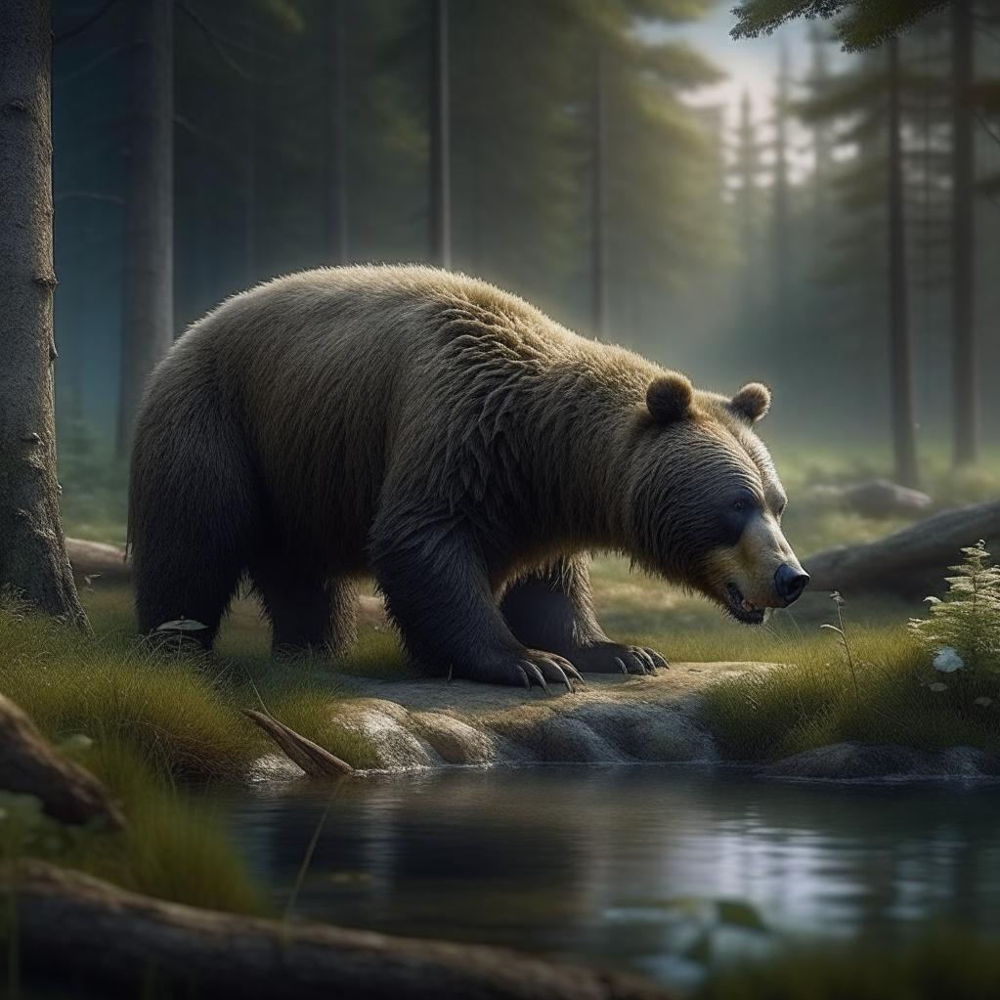
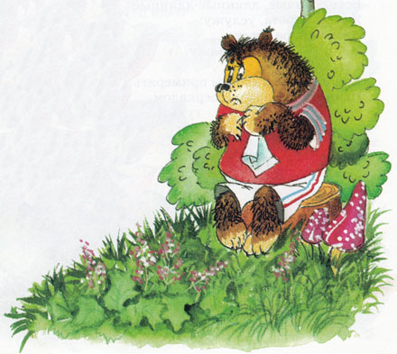
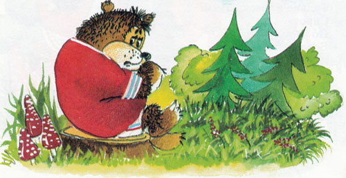
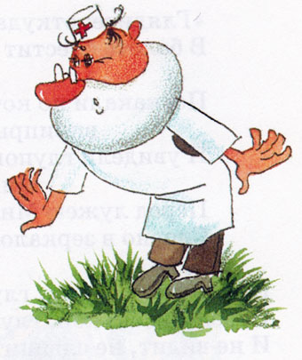
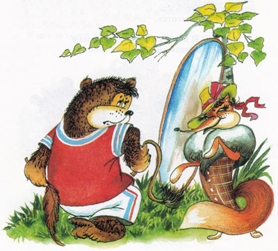
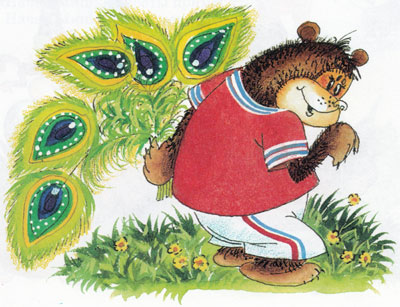
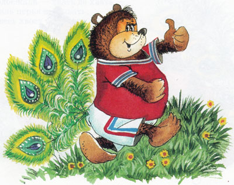
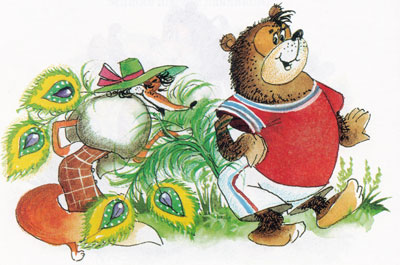
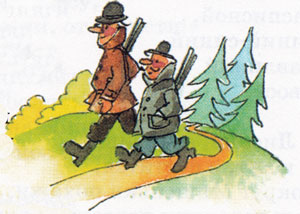
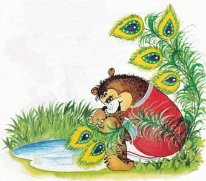

Топтыгин и лиса.
Корней Чуковский
Отчего ты плачешь,
Глупый ты Медведь? -
Как же мне, Медведю,
Не плакать, не реветь?
Бедный я, несчастный
Сирота,
Я на свет родился
Без хвоста.

Даже у кудлатых,
У глупых собачат
За спиной весёлые
Хвостики торчат.
Даже озорные
Драные коты
Кверху задирают
Рваные хвосты.

Только я, несчастный
Сирота,
По лесу гуляю
Без хвоста.
Доктор, добрый доктор,
Меня ты пожалей,
Хвостик поскорее
Бедному пришей!
Засмеялся добрый
Доктор Айболит.
Глупому Медведю
Доктор говорит:

Ладно, ладно, родной, я готов.
У меня сколько хочешь хвостов.
Есть козлиные, есть лошадиные,
Есть ослиные, длинные-длинные.
Я тебе, сирота, услужу:
Хоть четыре хвоста привяжу...
Начал Мишка хвосты примерять,
Начал Мишка перед зеркалом гулять:
То кошачий, то собачий прикладывает
Да на Лисоньку сбоку поглядывает.

А Лисица смеётся:
Уж очень ты прост!
Не такой тебе, Мишенька, надобен хвост!
Ты возьми себе лучше павлиний:
Золотой он, зелёный и синий.
То-то, Миша, ты будешь хорош,
Если хвост у павлина возьмёшь!
А косолапый и рад:
Вот это наряд так наряд!
Как пойду я павлином
По горам и долинам,
Так и ахнет звериный народ:
Ну что за красавец идёт!
А медведи, медведи в лесу,
Как увидят мою красу,
Заболеют, бедняги, от зависти!

Но с улыбкою глядит
На медведя Айболит:
И куда тебе в павлины!
Ты возьми себе козлиный!
Не желаю я хвостов
От баранов и котов!
Подавай-ка мне павлиний,
Золотой, зелёный, синий,
Чтоб я по лесу гулял,
Красотою щеголял!

И вот по горам, по долинам
Мишка шагает павлином,
И блестит у него за спиной
Золотой-золотой,
Расписной,
Синий-синий
Павлиний
Хвост.
А Лисица, а Лисица
И юлит, и суетится,
Вокруг Мишеньки похаживает,
Ему перышки поглаживает:

До чего же ты хорош,
Так павлином и плывёшь!
Я тебя и не признала,
За павлина принимала.
Ах, какая красота
У павлиньего хвоста!
Но тут по болоту охотники шли
И Мишенькин хвост увидали вдали.
Глядите: откуда такое
В болоте блестит золотое?

Поскакали но кочкам вприпрыжку
И увидели глупого Мишку.
Перед лужею Мишка сидит,
Словно в зеркало, в лужу глядит,

Всё хвостом своим, глупый, любуется,
Перед Лисонькой, глупый, красуется
И не видит, не слышит охотников,
Что бегут по болоту с собаками.
Вот и взяли бедного
Голыми руками,
Взяли и связали
Кушаками.
А Лисица
Веселится,
Забавляется
Лисица:
Ох, недолго ты гулял,
Красотою щеголял!
Вот ужо тебе, павлину,
Мужики нагреют спину.
Чтоб не хвастался,
Чтоб не важничал!
Подбежала - хвать да хвать,-
Стала перья вырывать.
И весь хвост у бедняги повыдергала.